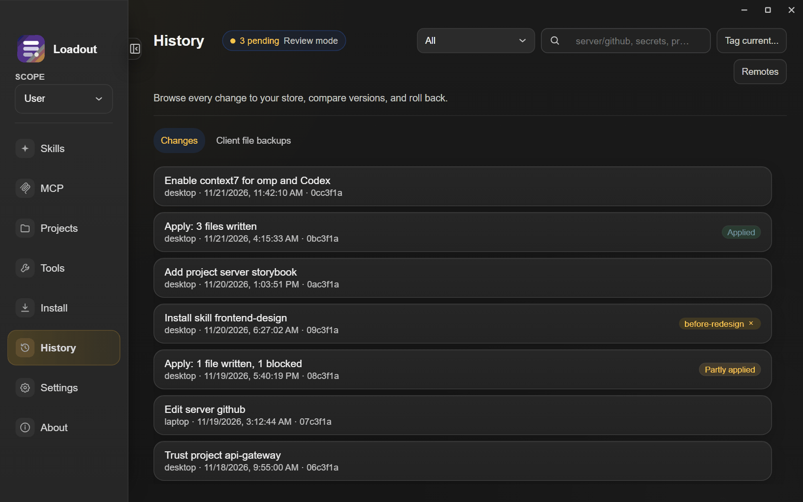

Open source · MIT · Windows and Linux
Patch every agent
from one store.
Loadout routes your MCP servers, skills and secret references from one versioned, offline store into each AI coding client's own config file. It only unplugs what it plugged in, and secret values never leave their vault.
- githubstdio
- context7http
- playwrightstdio
- sentryhttp
- code-reviewskill
Vault GITHUB_PAT · SENTRY_TOKEN
References only. Values resolve at launch, never on disk.
- ompRecommended
- Claude Code
- Codex
- Cursor+1 foreign, untouched
- GitHub Copilot
- Gemini CLI
- Claude Desktop · Pi · OpenCode · Grok Build · Windsurf · and more
Signal path
Define. Plan. Apply. Undo.
-
01 / Store
Define it once
store/servers/github.toml transport = "stdio" command = "npx" args = ["-y", "@modelcontextprotocol/server-github"] [env] GITHUB_PERSONAL_ACCESS_TOKEN = "${secret:GITHUB_PAT}"Plain TOML in a local git repository. Secrets are references to an env var, the OS keyring or 1Password.
-
02 / Plan
See every write first
pending changes ~/.omp/agent/mcp.json +1 ~0 -0 ~/.codex/config.toml +1 ~0 -0 ~/.cursor/mcp.json +0 ~1 -0 foreign entries 2 · skippedPer file, per entry. Format-preserving edits keep comments and key order in JSON, JSONC, JSON5, TOML and YAML.
-
03 / Apply
Ship it, keep the way back
apply Apply: 3 files written backups 3 · before each write commit 0cc3f1a Undo this applyOne commit per apply. Roll back any apply, restore any version, tag the ones that matter.
Isolation
Built so it can't make a mess.
Owns only what it wrote
A machine-local ledger records every entry Loadout wrote. Everything else is foreign: never edited, never deleted, unless you adopt it.
Secrets by reference
Env, OS keyring or 1Password. A leak scanner checks every store commit, so no value lands in history or a remote.
Projects need trust
Project manifests can run commands, so Loadout shows you the diff and waits for "Trust and apply".
Offline, no vendor in the loop
No account, no baked-in OAuth app. Back up to any git remote or a plain folder, if you want to at all.

Patch in
Install Loadout
Signed per-user installer: no admin rights, loadout on your PATH, updates itself.
winget install DailenG.AgentLoadoutchoco install agent-loadoutwinget and Chocolatey packages are pending approval.
AppImage (updates itself), .deb or .rpm from the latest release.
yay -S agent-loadout-binAUR packages are pending publication.
The loadout command line works on any OS with Rust. No macOS app yet.
cargo install agent-loadoutEvery release lists SHA-256 sums for its assets.